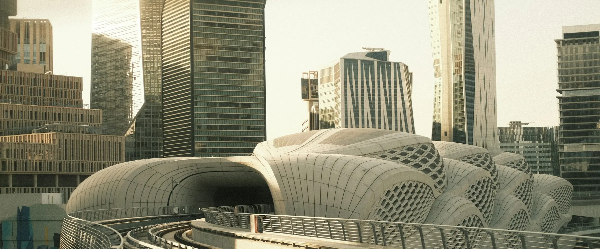

تعمل هيكلة عبر أربع علامات متخصصة، وتبني مشاريع خاصة بها.
أربع علامات متخصصة تعمل داخل بيت هيكلة واحد، وتبني هيكلة إلى جانبها مشاريع خاصة بها. وتطبّق هذه المشاريع نموذج هيكلة عمليًا: نقدّم المشورة، ثم نبقى لنبني ونشغّل ونتملّك حصة فيما نُهيكله. ويُحصي جرد الأرشيف 108 مشروعًا وتطبيقًا ومنصة تقنية بين 2004 و2026.
أعداد الجرد استرشادية.
العلامات المتخصصة
-
FINA.
الهيكلة المالية.
علامة متخصصة تابعة لهيكلة
-
MARK.
الأثر السوقي.
علامة متخصصة تابعة لهيكلة
-
AXIS.
النفاذ.
علامة متخصصة تابعة لهيكلة
-
AGTI.
الزراعة الدقيقة بالذكاء الاصطناعي.
علامة متخصصة تابعة لهيكلة
- الممارسة
- بناء المشاريع وتنفيذها
المشاريع
-
NATHARAH
مشروع قائم على نموذج هيكلة لإدارة الأوقاف: تأسيس الوقف، وحوكمته عبر الناظر، وتوزيع غلّته.
مشروع من مشاريع هيكلة
- من سجلّنا
- هيكلة الأوقاف ونموذج لإدارة الأوقاف
- المسرد
- الوقف
-
Cyber HAYKALAH
مشروع في الأمن السيبراني. وتبني ممارسة التحول الرقمي في هيكلة حلولها داخليًا ومع شركائها، ومنهم Cyber HAYKALAH.
مشروع من مشاريع هيكلة
- الممارسة
- التحول الرقمي
-
Arsann
شركة تشغيل مواقف نشأت من دراسة جدوى لمواقف السيارات عام 2010: دورة الاستشارة ← البناء ← التخارج في شركة واحدة.
أسسها مؤسس هيكلة وبناها ثم باعها
بِيعت لمجموعة استثمارية سعودية في 2023، ومسجّلة في ملفات هيكلة
- الممارسة
- بناء المشاريع وتنفيذها
-
AS3A
منصة تربط الباحثين السعوديين عن العمل المرن والجزئي بأصحاب العمل.
مشروع من مشاريع هيكلة، بنته هيكلة بصفتها مؤسسًا وبانيًا ومستشارًا استراتيجيًا
قيد التشغيل، واتفاقيات العملاء موقّعة
- الممارسة
- بناء المشاريع وتنفيذها
- من سجلّنا
- منصة AS3A للعمل المرن
لا تُنشر أرقام نمو المشاريع قبل تدقيقها. ولا نذكر أسماء الأطراف الأخرى في المشاريع قبل موافقتها.
كيف نصنع القيمة
-
 01
01الابتكار
تنقل NATHARAH نموذج إدارة الأوقاف الذي تبنيه هيكلة منذ 2010 إلى مشروع مستقل، ويعمل Cyber HAYKALAH مع ممارسة التحول الرقمي في هيكلة على الحلول التي تبنيها داخليًا ومع شركائها.
-
 06
06التسويق التجاري
تحوّلت دراسة لمواقف السيارات عام 2010 إلى Arsann، وهي شركة تشغيل بناها مؤسس هيكلة وباعها لمجموعة استثمارية سعودية في 2023، ونقلت AS3A نموذج العمل المرن إلى السوق منصةً قائمة واتفاقيات عملائها موقّعة.
من الاستشارة إلى الملكية
تتبع هذه المشاريع النموذج التجاري في سجل هيكلة؛ فبين 2013 و2019 انتقل إلى مقاعد في مجالس الإدارة ومشاريع مملوكة، ومنذ 2024 أضاف «الحصة مقابل البناء»، مع استحقاق حصص الشركاء عند مراحل متفق عليها. وتشرح صفحة منهجيتنا كيف تعمل المنهجية.
لا نختار بين الاستشارة والملكية، بل نوظّف الاستشارة والتنفيذ لصناعة القيمة.
تُنفَّذ الأنشطة الخاضعة للتنظيم من خلال شركاء مرخّصين على النحو المناسب.
أسئلة شائعة
ما العلامات المتخصصة التابعة لهيكلة؟
FINA. (الهيكلة المالية)، وMARK. (الأثر السوقي)، وAXIS. (النفاذ)، وAGTI. (الزراعة الدقيقة بالذكاء الاصطناعي). وتحتفظ كل علامة بنقطتها، وتعمل داخل هيكلة.
ما المشاريع التي بنتها هيكلة؟
من مشاريع هيكلة الخاصة NATHARAH، القائم على نموذج إدارة الأوقاف؛ وCyber HAYKALAH، مشروع الأمن السيبراني؛ وAS3A، منصة العمل المرن القائمة؛ وArsann، شركة تشغيل المواقف التي بناها مؤسس هيكلة وباعها في 2023.
هل يمكنني الاستثمار في أحد مشاريع هيكلة عبر هذا الموقع؟
لا. لا يُعدّ أي محتوى في هذا الموقع عرضًا أو دعوةً أو استشارةً استثمارية. وعندما تتضمن صفقةٌ طرحًا لأوراق مالية، تتولى هذا النشاط مؤسسةٌ مرخّص لها من هيئة السوق المالية يجري التعاقد معها للصفقة.
هل تبني هيكلة مشاريع مع مؤسسين آخرين؟
نعم. تنضم هيكلة إلى المؤسسين والمستثمرين الأفراد والشركات الدولية شريكًا مؤسِّسًا بثقل مؤسسي، من التحقق من الفكرة حتى الجاهزية للتمويل.
أحضر الفكرة أو الخطة أو الشركة التي بدأتها، ويمكن أن نبدأ باتفاقية عدم إفصاح.